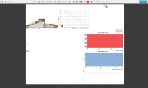
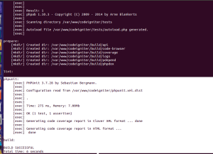
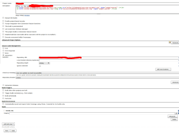

Continues Integration is Software practice which is used to improve
the software quality and make sure the Coding Standard and style of the
organisation .

Setup Environment :
Install the following item
a) setup PHPUnit
sudo pear upgrade PEAR
sudo pear config-set auto_discover 1
sudo pear install pear.phpunit.de/PHPUnit
sudo pear install phpunit/DbUnit
b) Jenkins Setup
sudo apt-get update
sudo apt-get install jenkins
c) Downloading the necessary files and install in to the existing projects
d) PHP CodeSniffer
sudo pear install PHP_CodeSniffer
e) PHP Mess Detector / (PHP_MD)
sudo apt-get install php5-dev
sudo pear channel-discover pear.phpmd.org
sudo pear channel-discover pear.pdepend.org
sudo pear install –alldeps phpmd/PHP_PMD
g) PHP Depend
sudo pear channel-discover pear.pdepend.org
sudo pear install pdepend/PHP_Depend-beta
h) Installing PHPCPD (PHP Copy paste detector)
pear channel-discover pear.phpunit.de
pear install phpunit/phpcpd
i) php_ab Installation
sudo wget -N –no-check-certificate -O /bin/phpab http://phpab.net/phpab-1.10.3.phar
sudo chmod +x /bin/phpab
j) ANT Setup
apt-get install ant php5-xsl php5-xdebug libxml2-utils
How to setup the environment for CodeIgniter
In order to run PHPUnit there are some modfications needed in some files and wanted to create some new files .
//application/config/config.php
$config[‘uri_protocol’] = ‘REQUEST_URI’;//’AUTO’; line 64
$config[‘enable_hooks’] = TRUE;//FALSE; line 125
// application/config/hooks.php
$hook[‘display_override’] = array(
‘class’ => ‘DisplayHook’,
‘function’ => ‘captureOutput’,
‘filename’ => ‘DisplayHook.php’,
‘filepath’ => ‘hooks’
);
// application/hooks/DisplayHook.php
class DisplayHook {
public function captureOutput() {
$this->CI =& get_instance();
$output = $this->CI->output->get_output();
if (ENVIRONMENT != ‘testing’) {
echo $output;
}
}
}
Modification on system/core/Utf8.php:
$CFG =& load_class(‘Config’, ‘core’);
Create a new folder called “tests” in to the project root directory
Folder hierarchy
Codeigniter
application
-build.xml
-phpunit.xml.dis
tests
-boostrap.php
-phpunit.xml
phpunit.xml:
boostrap.php:
Copy the index.phhp and chagned the environment as testing
define(‘ENVIRONMENT’, ‘testing’);
and add the following things
$system_path = realpath(dirname(__FILE__)).’/../elephanti/system’;
$application_folder = realpath(dirname(__FILE__)).’/../elephanti/application’;
Sample PHPUnit test:
https://bitbucket.org/azeem-j/phpunit-codeigniter
DBUnit testing:
how to take DB xml schema thorug terminal
mysqldump –xml -t -u root -p dbname > db-seed.xml
Sample DBunit testing
It will come soon
Accessing Jenkins:
http://localhost:8080/
How to run the unit test with ant
go to root directory and run “ant -f build.xml”

How to run the unit test with PHPUnit
Creating a new job in jenkins


{kind=link}
{kind=link}
{kind=link}
{kind=link}
{kind=link}
{kind=link}
Hi, Thakns for ur great article.I have some when i build the project jenkins says that WARNING: clock of the subversion server appears to be out of sync. This can result in inconsistent check out behavior.
Yes Winnie.That issues is still at the jenkins .
In order to overcome the issue use @HEAD at the end of the svn url.
Ex:http://svnurl@HEAD